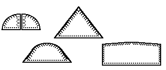
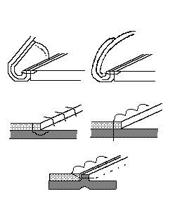
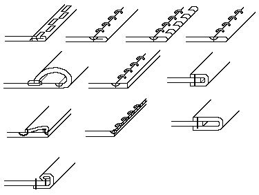

Counters in medieval shoes, also known as Heel Stiffeners, and sometimes as Back Straps and Heel Risers, are square, triangular or semicircular shaped bits of leather sewn onto the inside, and sometimes the outside, surface of the shoes to stiffen the heel portion.

They do not generally appear in Dark Age shoes (although they do appear in a few, most notably in 10th century York), but rather they are much more common by the 12th century. They continue to be used intermittantly until the present day.
They are generally sewn to the body of the heel/quarters usually with a whipstitch (aka a binding stitch), and then stitched into the lasting margin as part of the upper.

An edge binding (sometimes called a topband) is a bit of leather that is stitched around the edge of a shoe, usually around the top of the shoe, hence the name, intended to strengthen the shoe and minimize stretching, as well as to give a more finished look to the product.. They are quite common in Dark Age shoes, and continue well on into the later Medieval period. They are extremely popular in German footwear. Some edge binding forms include:

Return to Contents
Footwear of the Middle Ages - Counters and Edge Binding, Copyright � 1996, 1998,
1999 I. Marc Carlson.
This page is given for the free exchange of information, provided the author's name is
included in all future revisions, and no money change hands, other than as expressed in
the Copyright Page.